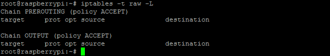
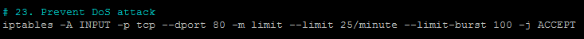
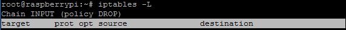
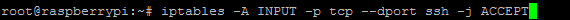
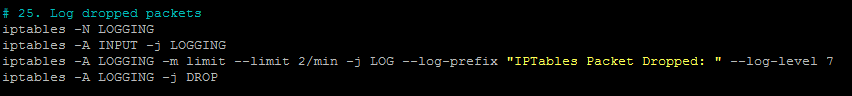
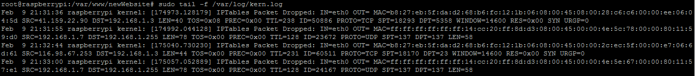
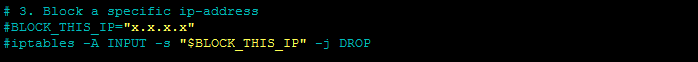
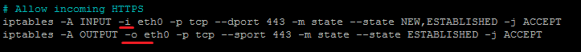

Iptables
Description
Iptables and ip6tables are used to set up, maintain, and inspect the tables of IPv4 and IPv6 packet filter rules in the Linux kernel. Several different tables may be defined. Each table contains a number of built-in chains and may also contain user-defined chains. Each chain is a list of rules which can match a set of packets. Each rule specifies what to do with a packet that matches. This is called a 'target', which may be a jump to a user-defined chain in the same table.
Targets
A firewall rule specifies criteria for a packet and a target. If the packet does not match, the next rule in the chain is examined; if it does match, then the next rule is specified by the value of the target, which can be the name of a user-defined chain, one of the targets described in iptables-extensions(8), or one of the special values ACCEPT, DROP or RETURN.
- ACCEPT - means to let the packet through.
- DROP - means to drop the packet on the floor.
- RETURN - means stop traversing this chain and resume at the next rule in the previous (calling) chain. If the end of a built-in chain is reached or a rule in a built-in chain with target RETURN is matched, the target specified by the chain policy determines the fate of the packet.
Tables and Chains
-
Filter Tables - Filter is default table. It contains the built-in chains INPUT (for packets destined to local sockets), FORWARD (for packets being routed through the box) and OUTPUT (for locally generated packets)
- INPUT chain - Incoming to firewall. For packets coming to the local server.
- OUTPUT chain - Outgoing from firewall. For packets generated locally and going out of the local server.
- FORWARD chain - Packet for another NIC (Network interface controller) on the local server. For packets routed through the local server.
-
NAT table - This table is consulted when a packet that creates a new connection is encountered. It consists of three built-ins: PREROUTING (for altering packets as soon as they come in), OUTPUT (for altering locally -generated packets before routing), and POSTROUTING (for altering packets as they are about to go out).
- PREROUTING chain - Alters packets before routing. i.e Packet translation happens immediately after the packet comes to the system (and before routing). This helps to translate the destination ip address of the packets to something that matches the routing on the local server. This is used for DNAT (destination NAT).
- OUTPUT chain - NAT for locally generated packets on the firewall.
- POSTROUTING chain - Alters packets after routing. i.e Packet translation happens when the packets are leaving the system. This helps to translate the source ip address of the packets to something that might match the routing on the desintation server. This is used for SNAT (source NAT).
-
Mangle table - This table is used for specialized packet alteration. It has the following built-in chains:
- PREROUTING chain - for altering incoming packets before routing
- OUTPUT chain - for altering locally-generated packets before routing
- FORWARD chain - for altering packets being routed through the box
- INPUT chain - for packets coming into the box itself
- POSTROUTING chain - for altering packets as they are about to go out
-
Raw table - This table is used for configuration excemptions. It has the following built-in chains:
- PREROUTING chain
- OUTPUT chain

Table Chain and Rule Structure

Edit iptable rules
- target - Special target variable (ACCEPT; DROP; REJECT; etc)
- prot - Protocols. (TCP; UDP; ICMP; etc)
- opt - Special options for that specific rule.
- source - Source ip-address of the packet.
- destination - Destination ip-address for the packet
- -A INPUT - Append a rule to the INPUT chain
- -p tcp - Apply the rule to the tcp protocol
- --dport ssh - Apply the rule to the port used by SSH (port 22)
- -j ACCEPT - Set it to accept traffic to the input chain when using tcp on the ssh port
- NEW - The connection has not yet been seen.
- RELATED - The connection is new, but is related to another connection already permitted.
- ESTABLISHED - The connection is already established.
- INVALID - The traffic couldn't be identified for some reason.
- - -limit - The maximum matching rate, given as a number followed by "/second", "/minute", "/hour", or "/day" depending on how often you want the rule to match. If this option is not used and -m limit is used, the default is "3/hour". 
- ACCEPT - Accept the packet and stop processing rules in this chain.
- REJECT - Reject the packet and notify the sender that we did so, and stop processing rules in this chain.
- DROP - Silently ignore the packet, and stop processing rules in this chain.
- LOG - Log the packet, and continue processing more rules in this chain. Allows the use of the --log-prefix and --log-level options.
- -I INPUT 5 would insert the rule into the INPUT chain and make it the 5th rule in the list.
-

Let's append a rule to the INPUT chain. This will allow incoming SSH (port 22) traffic:
What just happened
Basic Iptables Options
- A - Append this rule to a rule chain. Valid chains for what we're doing are INPUT, FORWARD and OUTPUT, but we mostly deal with INPUT in this tutorial, which affects only incoming traffic.
- L - List the current filter rules.
- m conntrack - Allow filter rules to match based on connection state. Permits the use of the --ctstate option.
- -ctstate - Define the list of states for the rule to match on. Valid states are:
- m limit - Require the rule to match only a limited number of times. Allows the use of the --limit option. Useful for limiting logging rules.
- p - The connection protocol used.
- -dport - The destination port(s) required for this rule. A single port may be given, or a range may be given as start:end, which will match all ports from start to end, inclusive.
- j - Jump to the specified target. By default, iptables allows four targets:
- -log-prefix - When logging, put this text before the log message. Use double quotes around the text to use.
- -log-level - Log using the specified syslog level. 7 is a good choice unless you specifically need something else.
Checking logs:
- I - Inserts a rule. Takes two options, the chain to insert the rule into, and the rule number it should be.
- v - Display more information in the output. Useful for if you have rules that look similar without using -v.
- s - -source - address[/mask] source specification
- d - -destination
- o - -out-interface - output name[+] network interface name ([+] for wildcard)
- i - Only match if the packet is coming in on the specified interface.
